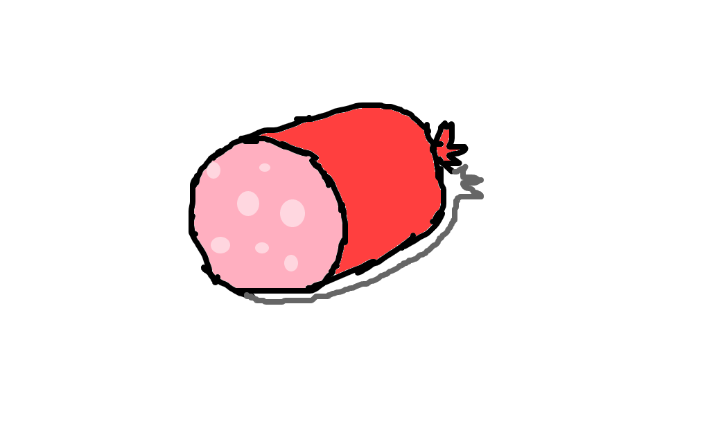

PROCESSADOS
Um alimento processado é um alimento que teve seu estado original mudado após algum
tipo de processo, como a adição de açúcar, sal ou alguma outra substância que foi
usada para agradar ao paladar de quem está comendo.
Por serem alimentos processados a quantidade de açúcar, sal e óleo contido no
alimento é maior do que em seu estado original ,ele recebe a classificação de
processados por terem passados por seus devidos processos de refinamentos.
O que é o processamento nos alimentos?
O processamento são técnicas usadas nos alimentos para mudar certa característica
sua como por exemplo sua vida útil, e vale lembrar que são diversas delas e podem ser
usadas ou variadas de acordo com o alimento "modificado”, entre elas podem incluir :
1-Conservação:o alimento recebe conservantes para prolongar sua vida útil, através da pasteurização
(ato que persistem num aquecimento a baixo de 100 graus, durante um curto tempo) ou esterilização
(é resumido num processo de destruição de microrganismos altamente resistentes as temperaturas elevadas)
2-Modificação da textura: os alimentos podem também receber uma alteração em suas
texturas través dos processos de trituração (são usadas no objetivo de se conquistar
texturas especificas, e para ajudar aos processos de mistura e homogeneização) ou
moagem (usadas especificamente para diminuir as partículas por meio do trituramento)
3-Modificação de sabor: são adições usadas no interesse de modificação dos seus
sabores originais, normalmente são adicionados sal, açúcar ou outros ingredientes com esses objetivos
4-Fortificação:a fortificação são técnicas utilizadas para aumentar o teor de
micronutrientes usado como meio de aprimorar sua qualidade nutricional.

Arthur Vieira e Breno Padella 2024 ©Todos os direitos reservados
Trabalho acadêmico sem fins lucrativos